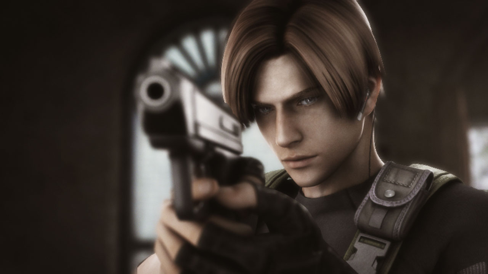

Leon Scott Kennedy Bio
Early life Kennedy is known to have suffered a traumatic childhood due to his family's connections to crime. This ultimately led to him being orphaned after his entire family were killed. Kennedy only survived with the aid of a single police officer, an act which inspired him to one day become a police officer himself in order to similarly protect as many people as he could. Upon graduating from the police academy at the age of 21, Kennedy requested assignment to work for the Raccoon Police Department. His reason was interest in the widely publicized but unsolved bizarre murder cases taking place in and around the Arklay Mountains.
First Apperance
Leon kennedy first apperance is in Resident evil 2 as a police officer, arriving to Raccoon City late because he at a motel drinking, past out and hungover. Kennedy drove southwards into the city as normal and was surrounded by Zombies while investigating a body in the middle of the unusually quiet main road. Retreating into an alleyway he met Claire Redfield, another newcomer, who was herself fleeing from Zombies within a diner. They commandeered an RPD cruiser and drove to the Raccoon Police Station to seek shelter and answers.

Operation Javier
n 2002, before the destruction of the Russian branch of Umbrella, Kennedy was sent to a small South American country as part of a secret military detachment after the headquarters were informed that a former researcher from Umbrella contacted a man named Javier Hidalgo. Due to the difficult nature of the operation, Jack Krauser, a seasoned and decorated U.S. Army Special Forces operator, was selected to be Kennedy's partner.
They later found themselves having to cooperate as a two-man cell in a t-Virus outbreak. Kennedy also met a mysterious girl called Manuela, who seemed to be the only survivor of the village, though it was unknown why she didn't escape. Manuela turned out to be Javier's daughter; she contracted a rare disease, and was kept alive by her father through the t-Veronica Virus. While exploring Javier's compound, Kennedy opened up to Krauser about his hellish night in Raccoon City, as well as Claire's encounter with the t-Veronica Virus to explain how Umbrella's B.O.W.s worked.However, Javier was and Manuela was taken custody by the U.S. Government parted ways from Leon and Krauser.
Los illuminados
In 2004, President Grahams daughter has been abducted by some cult memebers being on her way home. American spies reported having seen the girl, Ashley Graham, in Spain and tracked her to an isolated, rural community. With all government agents being thoroughly investigated to identify the mole, Kennedy was sent alone to investigate the area.
Fast forward into the fasinating adventure in Spain he finally found Ashley Graham, is the both of them got injected with the Las Plagas yes they did but don't worry they got them out with the machine.
In the pursuit, Kennedy was confronted by none other than Krauser, who had joined the Organisation after his experience in South America and faked his death. Krauser had been the original agent tackled with obtaining a Dominant species Plaga sample and took part in the kidnapping of Graham to get it, with Wong being sent in to take over the mission when he was determined to be a liability after becoming the host of that very Plaga sample.
As the sun rose, Kennedy's fight against Los Iluminados continued with him seriously wounding Krauser following a mutation though mistook him for dead. Wong would later kill him. With the radio jamming ceased, Kennedy got in contact with a second government helicopter which launched an assault on the cult's militia before being destroyed by a rocket launcher on the Prophet Saddler's orders. Taking clues left by Dr. Sera for anyone storming the island, Kennedy and Graham were able to find the original equipment designed to kill prototype Plagas and freed themselves of the parasites.
Facts about Leon
- His Face Was Modeled After RE4's Animation Director
- Leon's Job Has Changed Throughout The Resident Evil Series
- Leon Has Strong Feelings For Ada Wong
- Leon's Character Is Being Explored More In Films
Leon's Quotes
- I'm sure you boys didn't just tag along so we could sing "Kumbaya" together at some Boy Scout bonfire. But then again, maybe you did.
- "Hey, take it easy. My name is Leon. I'm under the President's order to rescue you."
- "GET OUTTA MY FACE!"
Is he the best to be around?
Yes...yes he is